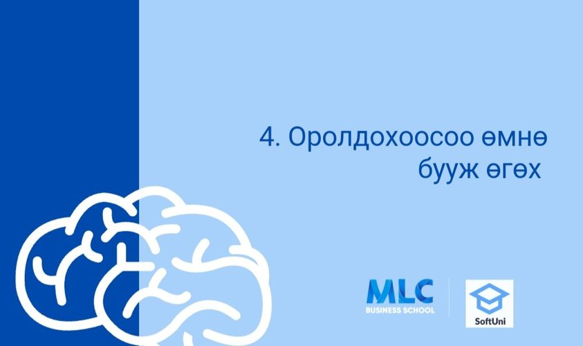
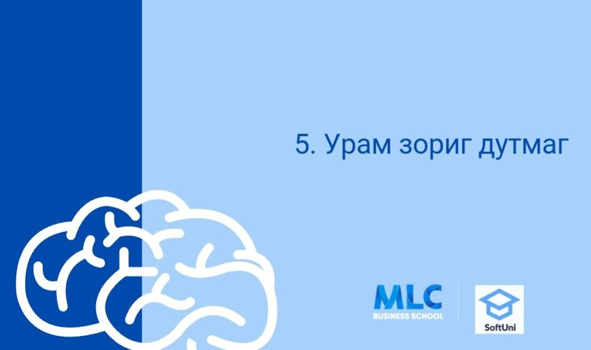

1. Буруу хувьсагчийн нэрс
2. Бүх зүйлийг нэг дор сурах

3. Хангалттай дасгал хийж давтахгүй байх

4. Оролдохоосоо өмнө бууж өгөх
Previous
Next
Программ анхлан суралцагч нарын гаргадаг ТОП 5 алдаа
Анхлан суралцагч нарын хувьд код бичих аялал маш хэцүү байх магадлалтай. Алдаа гаргах нь суралцах үйл явцын ердийн нэг хэсэг юм шүү.
Та ирээдүйд дараах зуршлаас зайлсхийж, программист болох ур чадвараа дээшлүүлнэ гэж найдаж байна.
“𝐹𝒶𝒾𝓁𝓊𝓇𝑒 𝒾𝓈 𝒶 𝑔𝓇𝑒𝒶𝓉 𝓉𝑒𝒶𝒸𝒽𝑒𝓇”
1. Буруу хувьсагчийн нэрс
Анхлан суралцагчид хувьсагч болон функцийн нэрэнд том, жижиг үсгийг хэрхэн ашиглах гэх мэт нарийн ширийн зүйлийг анхаардаггүй, санамсаргүй байдлаар алддаг.
Таны хэрэглэж буй хэлээс хамааран конвенцийн тодорхой хэв маяг байдаг.
Жишээлбэл, C# хэл дээр хувьсагчийн нэрийн хувьд бид "camelCase"-г ашигладаг - эхний үг нь жижиг үсгээр, нэмэлт үг бүр том үсгээр эхэлдэг (жишээ нь: myVariableName). Хувьсагчийн нарийн төвөгтэй байдлын түвшин нь бас чухал бүрэлдэхүүн хэсэг юм.
Нарийн төвөгтэй байдлын түвшин гэдэг нь хэрэв хувьсагч нь өргөн цар хүрээтэй бөгөөд илүү төвөгтэй байдаг бол түүнийг урт бөгөөд дэлгэрэнгүй нэрээр нэрлэх ёстой гэсэн үг юм. Энгийн ойлголттой хувьсагч нь богино бөгөөд энгийн нэртэй байх шаардлагатай.🧐
2. Бүх зүйлийг нэг дор сурах
Программчлалд суралцаж эхлэхэд та маш олон төрлийн програмчлалын хэл, номын сан, фреймворк, API гэх мэт мэдээллийн далай байгааг олж мэддэг.
Гэхдээ энэ их мэдээллийн урсгалд төөрөхийн оронд хөгжлийнхөө тодорхой талбарт анхаарлаа төвлөрүүлж, түүнд шаардлагатай ур чадварыг эзэмшсэн байх нь зүйтэй юм.
3. Хангалттай дасгал хийж давтахгүй байх
Хэрэв та хичээл үзэх эсвэл ном унших нь хангалттай гэж бодож байгаа бол буруу юм. Та үүнийг төгс ойлгож магадгүй, гэхдээ үүнээс олж авах зүйл зөвхөн хуурамч итгэл үнэмшил байна. Харин дасгал хийж эхлэх үед та илүү олон янзын асуудалтай тулгардаг бөгөөд энэ нь танд шийдлийг хурдан олохыг заадаг.
"Бага онол, илүү их кодлох" нь хамгийн сайн арга юм.
4. Оролдохоосоо өмнө бууж өгөх
Хэн нэгэн хүн "Би үүнийг хийж чадахгүй байна" гэж хэлэхийг та үзэн яддаг уу, тэр тусмаа оролдоогүй байж уу?
Анхлан суралцагчид эхний бүтэлгүйтлийнхээ дараа бууж өгөх хандлагатай байдаг. Хийж байгаа зүйлийг тань илүү сайн болгох нь бүтэлгүйтэл юм шүү.
Програмчлалын хувьд энэ энгийн зүйл учраас байгаагаар нь хүлээж аваарай.

5. Урам зориг дутмаг
“Би өөрийгөө программист болоход хангалтгүй гэж бодож байна. Программчлал надад зориулагдсан уу? Би оролдох ёстой юу, эсвэл би ирээдүйн карьераа өөр зүйлээр хайж олох уу?"😕😥
- Энэ бол ихэнх хүмүүс програмчлалын аялалынхаа эхэнд тулгардаг нөхцөл байдал юм. Хүсэл тэмүүллээ эргүүлэн авах арга нь тодорхой эцсийн зорилгоо биелүүлэх явдал юм. Энэ таныг үргэлжлүүлэхэд түлхэц өгнө. Анхаарал сарниж, төвлөрөхөө болих нь амархан, гэхдээ тодорхой зорилготой байгаа бол энэ нь асуудал биш.😉💪💫Confidence is the key to success.😍